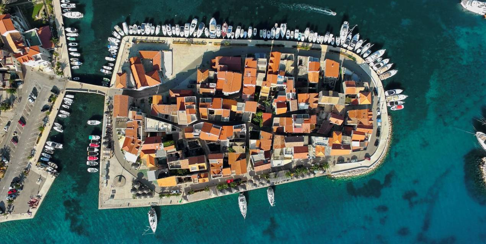

The picturesque Dalmatian village and the accompanying Sovlje are located in the heart of the Šibenik-Knin county. The picturesque Dalmatian village and the accompanying Sovlje are located in the heart of the Šibenik-Knin county.The advantage of Tribunj is its geographic position and the fact that it is divided into urban, mainland part and the peninsular historical core which now houses the municipal buildings, the Tourist Board office, post, rectory, cultural centre and a few hospitality establishments. The authentic image of compact houses and narrow streets is completed by a beautiful view of the two islands of the Tribunj archipelago - Lukovnjak and Logorun. Although it has focused on tourism in the last few decades, Tribunj is still recognized for fishing and olive growing, two main industry branches that have always been the local population's means of income. According to the census from 2011, Tribunj has 578 households and 1526 permanent residents. The Tribunj hinterland with field and cycling paths and trails cutting across typical Dalmatian olive groves and plantations of vines and thus leading visitors to panoramic sites on the Križine hill serve as an invitation to all cyclists, mountaineers and walkers to experience the magic of this region and get a complete and picturesque overview of Tribunj.
Tribunj is a typical Dalmatian town and harbor on the peninsula, with its narrow streets and densely built houses, located 4 km west of Vodice and known for the cleanest sea in the Adriatic. The local residents live mainly from tourism, agriculture and fishing. The old part of town is located on an island which is connected to the mainland by a stone bridge. Tribunj was founded by refugees from surrounding villages, and here you can visit monuments such as the church of St. Nicholas, the Turkish fort Jurjevgrad, the remains of the church of the Virgin Mary, etc. Sports enthusiasts can enjoy tennis, bowling, indoor soccer and sailing as well as diving schools. The clear blue sea and rich flora and fauna make it an ideal place for swimming and underwater safaris. The Rupa cove and several other smaller inlets west of the village have several beaches of which the most beautiful and popular is the Sovlja beach. Tribunj has a marina with 240 berths and 150 places on the mainland. The particularity of Tribunj is that when the fishermen return from sea the waterfront becomes a fresh fish and crab market. We recommend that you visit the tavern "Bepo", restaurant "Lanterna", restaurant "Tople", tavern "Roko" and the tavern "Simon" in order to try their fish delicacies. As with every other Dalmatian town, during the summer Tribunj organizes traditional feasts and the best known is the "Tribunj Night" and the "Fisherman's Night". Their greatest celebrations are the feast of the Assumption (15.08.) and the Feast of St. Nicholas (06.12.). Those looking for fun until the early morning hours can visit many discos in Vodice. Be sure to visit Vodice, Šibenik and Primošten.